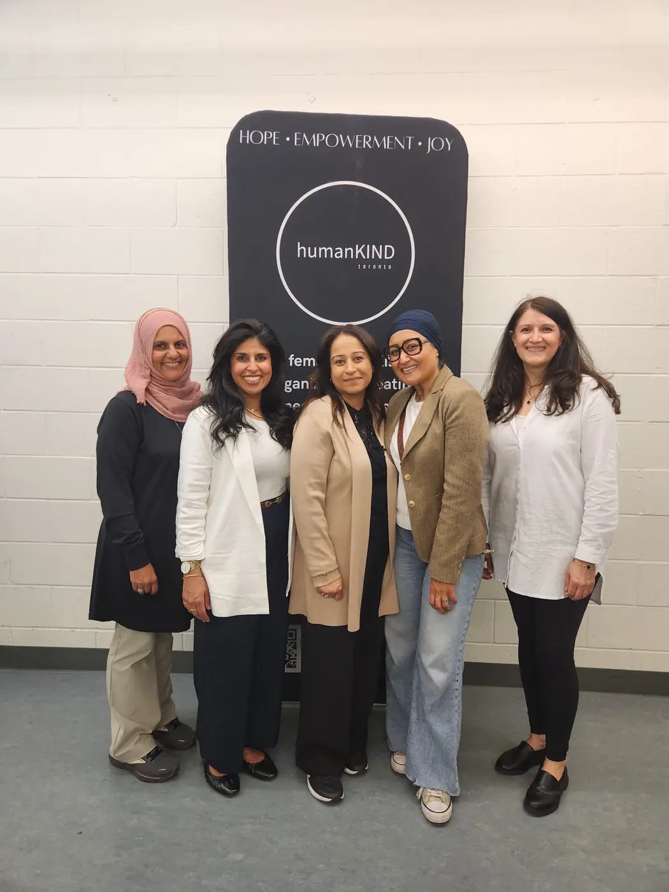
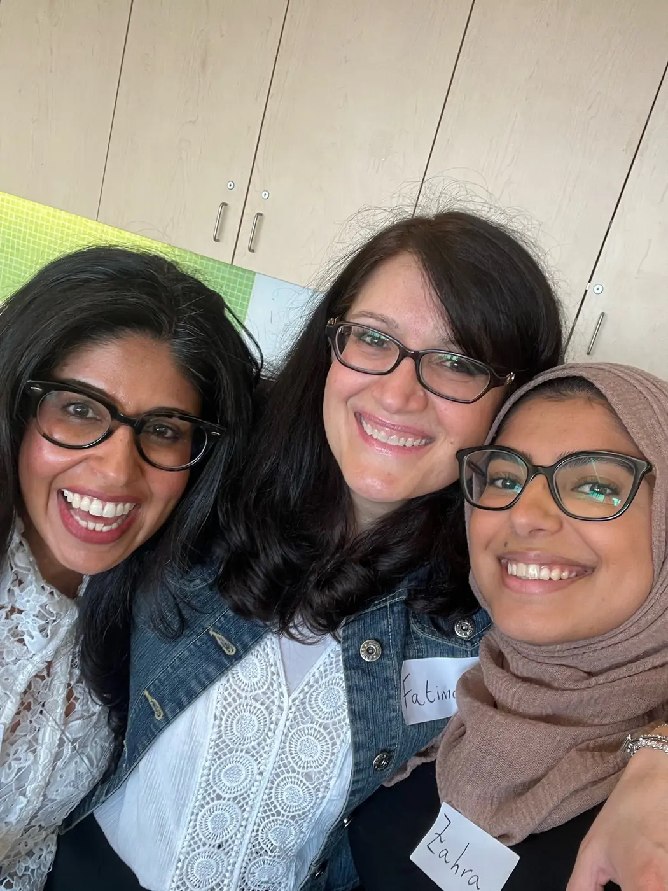
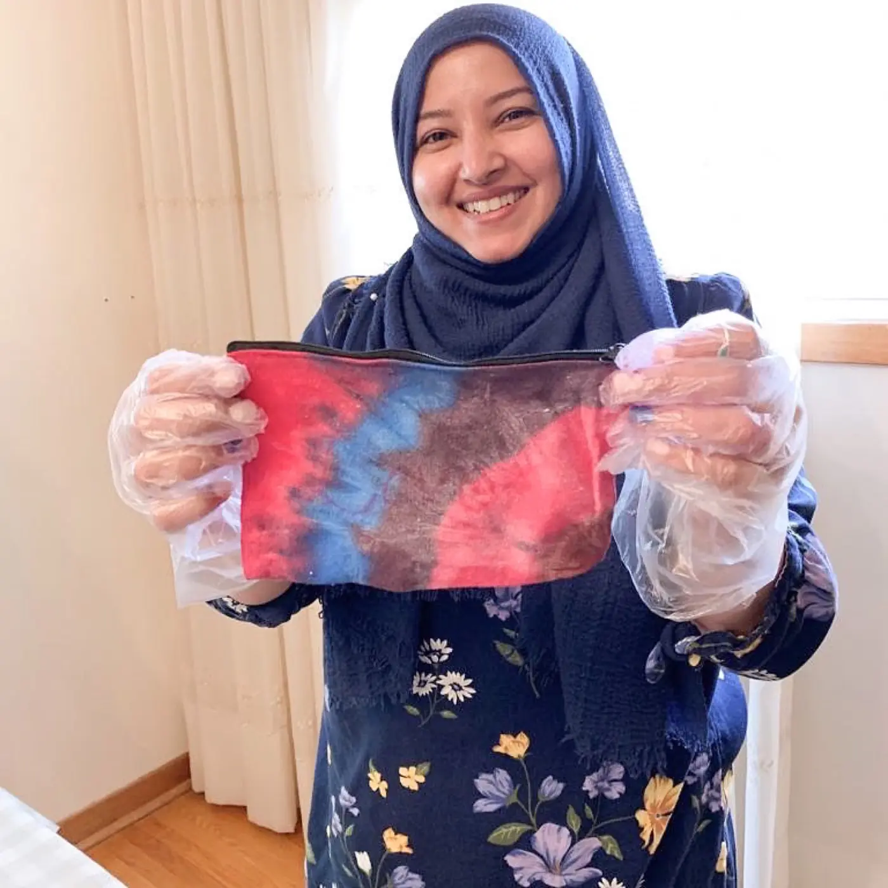

Ashifa Champsi
Founder
About humanKIND toronto
humanKIND toronto was founded in 2017 by a small group of women who believed kindness should be active — not passive.

Volunteer-led · GTA
We are a volunteer-led nonprofit working across the Greater Toronto Area to support women, children, and youth living in shelters.
Many of the individuals we serve are navigating through domestic abuse, homelessness, trauma, and profound isolation. Our role is not to “fix” their journey — but to walk beside them in it.
We partner with six shelters and currently deliver six monthly programs designed to foster healing, empowerment, and personal growth.
What grounds us
Everything we do is grounded in four core values.
We lead with heart.
We act with intention.
We listen first.
We grow together.
We believe real change happens when people come together, consistently, humbly, and wholeheartedly.
Our mission
To support and empower women, children, and youth living in shelters by providing meaningful programs, essential resources, and opportunities for the wider community to give back.
We exist to promote kindness in action.
Our vision
A community where every woman and child facing hardship feels supported, dignified, and surrounded by care.
We envision a world where no one rebuilding their life feels invisible and where giving back becomes second nature.
Meet the team
We asked our team a few questions to get to know them better. Flip a card to see what they had to say.
Founder
Sr. Board Member
Board Member
Board Member
Our reasons why
We at humanKIND toronto are passionate about helping others in need. We know that a simple act of kindness can have a profound impact on individuals, especially those who are dealing with trauma and feeling isolated. Through our various initiatives, we create opportunities to help bring people together, connect, learn and have fun.


Because the need never stops
Join a growing circle of volunteers, donors, partners and small businesses who show up, consistently and compassionately.